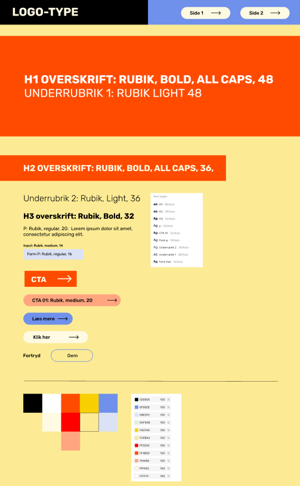
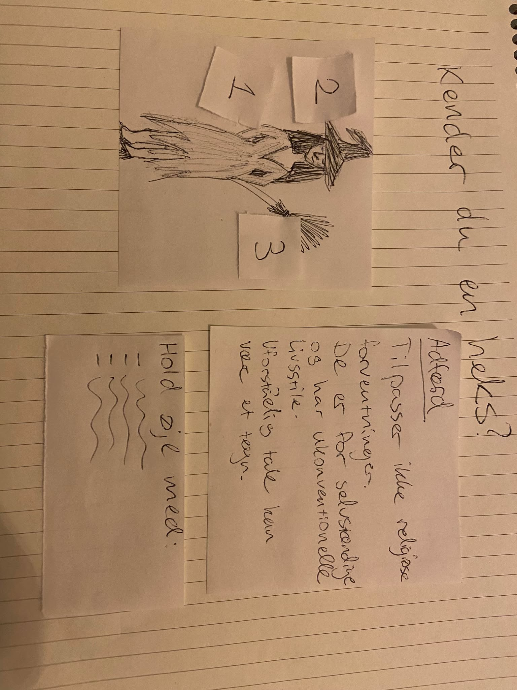
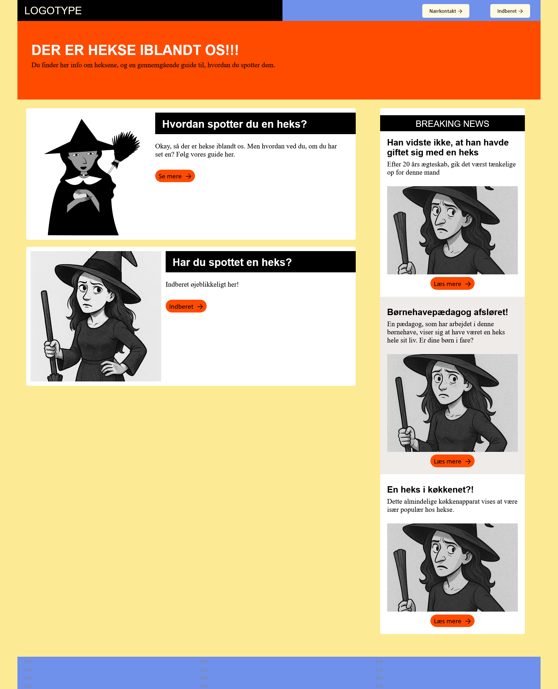
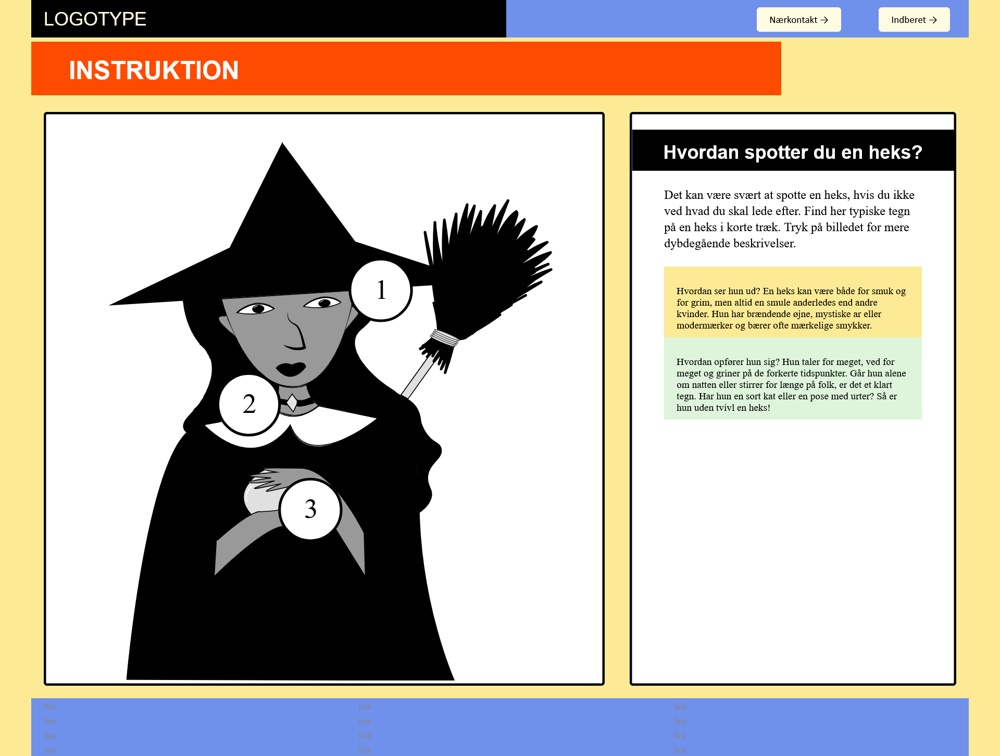
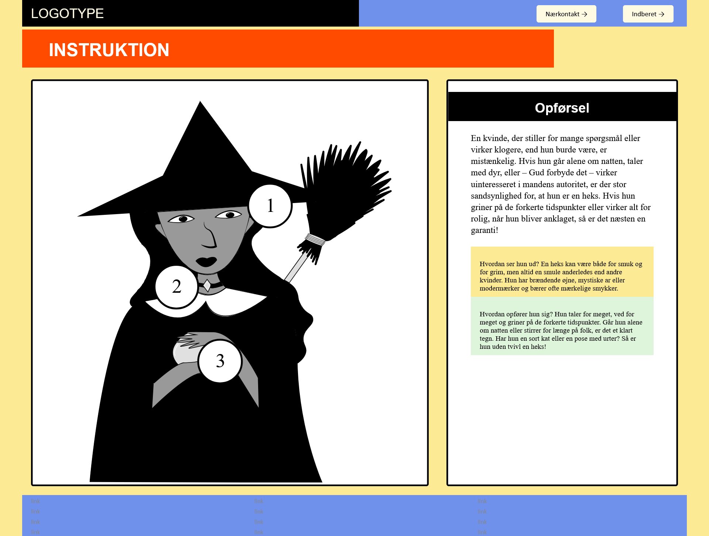
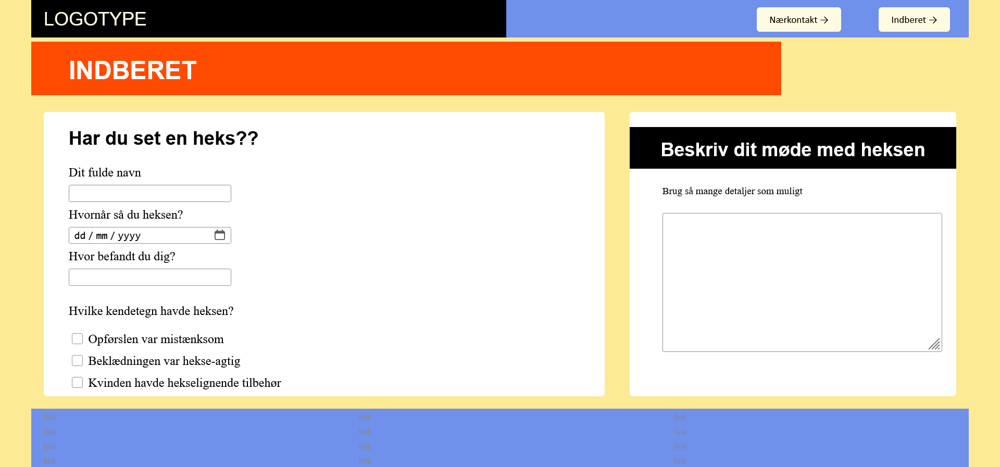

Animation
I tema 4, ved navn grundlæggende animation, skulle vi arbejde på udvalgte dele af et såkaldt Emergency Site, hvor fundamentet allerede var lavet, og som vi hentede fra et gitHub repository. Idéen var, at man skulle formidle et site, som eksisterede på grund af en nødsituation, eller katastrofe. Altså om det var zombie attack, rumvæsener, du er tøjkrise, mm. Sitet skulle indeholde 3 sider, og følge et udleveret wireframe og styletile.
Herunder er det udleveret styletile:
Min valgte nødsituation var, at der pludselig er hekse iblandt os. På sitet får brugeren råd til, hvad de skal gøre, hvis de møder en heks, hvordan man spotter dem, og et sted af “melde” dem.Sitets idé om, hvad en heks er, minder mere om hvordan man troede, at udvalgte kvinder var hekse for århundreder siden (alá Salem witch trials), end skildringen i tegnefilm, halloweenkostumer, osv.
Til at starte med, var opgaven at lave en infografik i Adobe Illustrator og implementere den på sitet, hvor den skulle være interaktiv. Herunder er en håndtegnet skitse af, hvordan det skulle se ud:
Det var første gang, jeg skulle arbejde med vektorgrafik, og fandt det lidt svært, at vænne mig til det, men jeg endte med denne tegning til infografikken:
Herefter skulle jeg lave en side med en webformular, hvor man kunne “melde” den heks, man havde set, ved at bruge <forms> tagget i html. Jeg endte med fem forskellige slags forms:<>
<input id="fullname" name="fname" type="text"><input type="date" id="date" name="dato" min="2000-01-01" max="2025-12-31">
<input id="place" name="sted" type="text">
<input id="kendetegn" name="kendetegn1" type="checkbox"> **der blev brugt flere end
én af denne**
<textarea name="beskrivelse" id="beskrivelse"><textarea>Herunder kan min fulde løsning af opgaven ses:
   